품질경영기사 (2016-05-08 기출문제)
1과목: 실험계획법
1. 다음은 인자 A, B 를 2수준(높은 수준 ＋, 낮은 수준 －)을 취하여 직교배열표에 의한 실험을 한 결과표이다. 교호작용의 제곱합(SA×B)의 값은?
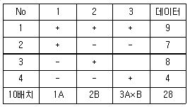
- 0.5
- 1.0
- 1.3
- 2.0
(정답률: 67%)

2. 다음은 A, B, C 3인자에 관한 반복 2회인 지분실험법의 분산분석표이다.  의 값은? (단, A, B, C는 변량인자이고,
의 값은? (단, A, B, C는 변량인자이고,
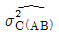
는 A, B 수준 내의 인자 C에 의한 모분산의 추정치이다.)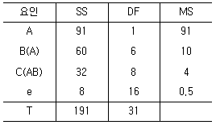
- 1.32
- 1.63
- 1.75
- 3.00
(정답률: 71%)
3. 인자 A, B 는 모수인자이고, C는 변량인자인 혼합모형의 반복없는 3원배치 실험에서 ℓ＝4, m＝3, n＝3인 경우 오차항의 자유도(?e)는?
- 6
- 9
- 12
- 24
(정답률: 63%)
4. 3수준계 직교배열표에서 오차항으로 2개의 열이 배정되었을 경우 오차항의 자유도(?e)는?
- 2
- 4
- 6
- 9
(정답률: 69%)
5. 변량모형의 반복이 같은 1원배치법에서 A요인의 수준수가 3이고 반복수가 4일 때, A 요인의 분산의 추정치(
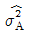
)를 구하는 식은?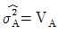
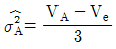
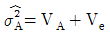
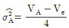
(정답률: 73%)
6. 4종류의 제품 A1, A2, A3, A4에 대하여 각각 3개, 5개, 10개, 8개를 샘플로 취하여 시험한 경우, 외국제품과 국내제품 간의 차의 대비(L)는? (단, A1:미국제품, A2:일본제품, A3：국내 자사제품, A4：국내 타사제품)
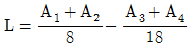
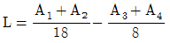
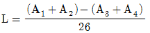
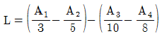
(정답률: 77%)
7. 실험계획 설계단계에서 결정하는 것이 아닌 것은?
- 요인 선정
- 특성치 선정
- 실험방법 결정
- 주효과 분석
(정답률: 71%)
8. 망목특성을 갖는 제품에 대한 손실함수는? (단, L(y)는 손실함수, k는 상수, y는 품질특성치, M은 목표값이다.)
- L(y)=k(y-m)2
- L(y)=ky2
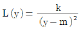
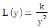
(정답률: 58%)
9. 반복이 2회인 22 요인배치법에서 요인 A의 효과가 －7.5일 때, 요인 A의 제곱합(SA)는 얼마인가?
- 56.5
- 112.5
- 168.5
- 225.5
(정답률: 63%)
10. 33 형의 1/3반복에서 I=ABC2을 정의대비로 9회 실험을 하였다. 다음 중 틀린 것은?
- C의 별명 중 하나는 AB이다.
- A의 별명 중 하나는 AB2C이다.
- AB2의 별명 중 하나는 AB이다.
- ABC의 별명 중 하나는 AB이다.
(정답률: 71%)
11. 일차단위가 1원배치인 단일분할법에서 인자 A, B는 모수인자, 블록 반복 R은 변량인자인경우, 추정치 및 통계량을 구하는 공식이 틀린 것은? (단, A, B의 수준수는 ℓ, m, 블록 반복 R의 수준수는 r이다.)
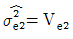
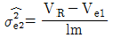
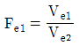
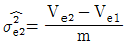
(정답률: 50%)
12. 난괴법 실험결과 구할 수 없는 것은?
- 오차평균제곱(Ve)
- 인자 A의 효과
- 교호작용의 효과
- 인자 B의 효과
(정답률: 57%)
13. 4×4 그레코 라틴방격에 의한 실험계획에서 분산분석 후 AiBjCk에서의 모평균 μ(AiBjCk)의 신뢰구간을 나타내는 것은? (단, A, B, C, D모두 모수이다.)
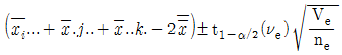
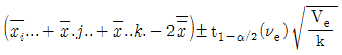
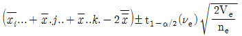
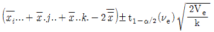
(정답률: 46%)
14. 실험계획법에서 사용되는 모형을 인자의 종류에 따라 분류할 때 해당되지 않는 것은?
- 선형모형
- 모수모형
- 변량모형
- 혼합모형
(정답률: 71%)
15. 반복없는 모수모형 2원배치 분산분석표에서 오차항의 자유도 (?e)는?
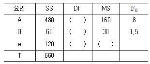
- 4
- 6
- 9
- 11
(정답률: 72%)
16. 다음의 분산분석표에서 결정계수(r2)의 값은 약 얼마인가?
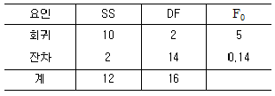
- 0.17
- 0.20
- 0.45
- 0.83
(정답률: 57%)
17. 다음 분산분석표를 해석한 결과가 틀린 것은?(단, 유의수준(α)은 5％이며, 인자 A, B는 모수인자, F0.95(2, 6)＝5.14, F0.95(3, 6)＝4.76이다.)
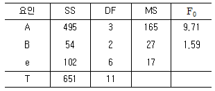
- 인자 B에 대한 귀무가설 H0:b1＝b2＝b3＝0는 유의수준 α＝0.⑤에서 채택된다.
- 인자 A에 대한 귀무가설 H0:a1＝a2＝a3=a4＝0는 유의수준 α＝0.⑤에서 기각된다.
- 인자 A의 각 수준에서의 평균에 대한 95％ 신뢰구간의 폭을 구하기 위해서는 오차의 평균제곱 Ve＝17 값이 반드시 필요하다.
- 인자 A의 각 수준에서의 평균에 대한 95％ 신뢰구간의 폭을 구하기 위해서는 인자 A의 평균제곱 VA=165 값이 반드시 필요하다.
(정답률: 59%)
18. 반복이 5회인 1원배치의 실험에서 A의 수준수는 2, 총 제곱합 ST＝925, 인자 A의 제곱합 SA＝604일 때 오차평균제곱(Ve)의 값은?
- 34.556
- 37.625
- 40.125
- 61.425
(정답률: 71%)
19. 기계와 열처리 방법에 따라서 부적합률에 차가 있는가를 검정하기 위하여 다음의 실험 데이터를 얻었다. 적합품을 0, 부적합품을 1로 하는 계수치 데이터를 만드는 경우에 A인자(기계)의 제곱합(SA)을 구하면 약 얼마인가?
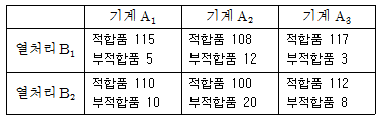
- 1.036
- 2.782
- 10.362
- 27.823
(정답률: 54%)
20. 24형 요인실험에서 정의대비 Ⅰ＝ABC, BCD, AD를 블록과 교락시켜 4개의 블록으로 나누어 실험을 실시한 결과 다음과 같은 데이터를 얻었다. 블록 간의 제곱합(SR)은?
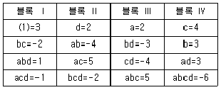
- 1.37
- 2.25
- 3.47
- 4.58
(정답률: 58%)
2과목: 통계적품질관리
21. 확률변수 X의 평균이 15, 분산이 4라면 E(2X2+5X+8)의 값은?
- 493
- 509
- 525
- 541
(정답률: 53%)
22. 다음은 두 개의 층 A, B의 데이터로 작성한
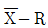
관리도로부터 층의 평균치 차이를 검정을 할 때 사용하는 식이다. 이 식의 전제조건으로 틀린 것은?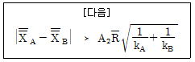
- kA, kB는 충분히 클 것
 간에 유의차가 없을 것
간에 유의차가 없을 것- 두 개의 관리도는 관리상태에 있을 것
- 두 관리도의 부분군의 크기가 충분히 클 것
(정답률: 51%)
23. 정규분포를 따르는 두 집단 A, B각각의 모 표준편차가 미지인 경우 신뢰도(1－α)로 모평균의 차이가 있는지를 검정할 경우 틀린 것은? (단, s2은 표본 분산, n은 표본 수, ?는 자유도이다.)
- 평균치 차의 검정을 하기 전에 등분산성의 검정이 필요하다.
- 등분산일 경우 검정통계량은
 이다.
이다. - 등분산의 조건에서 평균치 차에 대한 기각역은 ±t1-α/2(?A+?B)이다.
- 등분산에 관계없이 평균치 차의 검정에 대한 귀무가설은 H0:μA＝μB로 설정한다.
(정답률: 53%)
24. 샘플링검사에서 발생할 수 있는 오류에 관한 설명으로 틀린 것은?
- 생산자 위험과 소비자 위험은 비례관계가 성립한다.
- 생산자 위험과 소비자 위험은 근본적으로 샘플링 오차에 기인하는 것이다.
- 소비자 위험이란 불만족스러운 품질의 로트가 검사에서 합격 판정받을 가능성을 확률로서 표현한 것이다.
- 생산자 위험이란 충분히 좋은 품질의 로트가 검사에서 불합격 판정받을 가능성을 확률로서 표현한 것이다.
(정답률: 66%)
25. n＝5, k＝30인  관리도에서 관리계수 Cf=1.5이라면 공정이 어떻다고 생각되는가?
관리도에서 관리계수 Cf=1.5이라면 공정이 어떻다고 생각되는가?
- 급간변동이 크다.
- 군구분이 나쁘다.
- 대체로 관리상태이다.
- 이상원인이 존재하지 않는다.
(정답률: 61%)
26. 랜덤하게 채취한 도금 제품의 도면을 검사하였더니 핀홀 수가 15개 있었다. 모부적합수의 95％ 신뢰구간(confidence interval)의 상한을 추정하면 약 얼마인가?
- 21.371
- 22.591
- 24.008
- 24.977
(정답률: 59%)
27. 로트별 합격품질한계(AQL) 지표형 샘플링검사방식(KS Q ISO 2859－1：2014)에서 전환규칙에 관한 설명으로 틀린 것은?
- 까다로운 검사에서 연속 5로트가 합격되면 보통검사로 복귀된다.
- 연속 5로트 중 2로트가 불합격되면 보통검사에서 까다로운 검사로 전환한다.
- 불합격로트의 누계가 10개가 될 동안 까다로운 검사를 실시하고 있으면 검사를 중지한다.
- 검사중지에서 공급자가 품질을 개선하여 소관 권한자가 승인할 때 까다로운 검사로 실시한다.
(정답률: 62%)
28. σ1＝0.3, σ2＝0.4인 두 정규모집단의 평균치 차에 대해 H0：μ1≤μ2, H1:μ1＞μ2인 검정을 하려한다. 검정 결과 유의하다면, 유의수준 α 일 때 신뢰한계를 구하는 계산식은?
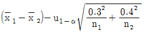
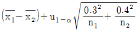
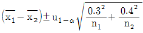
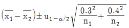
(정답률: 31%)
29. 다음의 표는 n＝30개의 데이터로부터 구한 최소값, 1사분위수, 2사분위수, 3사분위수, 최대 값을 순서대로 나타낸 것이다. 설명이 틀린 것은?
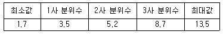
- 표본의 범위는 11.8이다.
- 표본의 평균치는 5.2보다 크다.
- 범위의 중간(midrange)은 7.6이다.
- 표본의 왜도계수는 음의 값이 된다.
(정답률: 48%)
30. 어떤 제조공정으로부터 np관리도를 작성하기 위해 n＝100개씩 20조를 취하여 부적합품수를 조사했더니 Σnp＝68이었다. np관리도의 관리상한(UCL)은 약 얼마인가?
- 5.437
- 7.025
- 8.837
- 8.932
(정답률: 51%)
31. 전수검사와 샘플링검사에 관한 비교설명 중 틀린 것은?
- 전수검사에서는 이론적으로 샘플링오차가 발생하지 않는다.
- 일반적으로 전수검사는 샘플링검사에 비하여 검사비용이 많이 든다.
- 부적합품이 로트에 포함될 수 없다면 전수검사로 실행하여야 한다.
- 시료를 랜덤하게 추출할 경우에는 샘플링검사의 결과와 전수검사의 결과가 일치하게 된다.
(정답률: 69%)
32. A기계와 B기계의 산포를 비교하기 위하여 각각의 기계로 15개씩의 제품을 가공하였더니 VA＝0.⑤2mm, VB＝0.178mm가 되었다. 유의수준 5％에서 A기계의 산포가 B기계의 산포보다 더 작다고 할 수 있는지를 검정한 결과로 맞는 것은? (단, F0.95(14, 14)＝2.48이다.)
- 주어진 정보로는 판단하기 어렵다.
- 두 기계의 산포는 같다고 할 수 있다.
- A기계의 산포가 더 작다고 할 수 있다.
- A기계의 산포가 더 작다고 할 수 없다.
(정답률: 66%)
33. 슈하트 관리도(KS Q ISO 7870－2：2014)에 관한 설명으로 틀린 것은?
- 슈하트의
 관리도는 공정의 평균과 산포의 변화를 동시에 볼 수 있는 특징이 있다.
관리도는 공정의 평균과 산포의 변화를 동시에 볼 수 있는 특징이 있다. - 슈하트 관리도에서 타점된 점이 ±3σ 관리도의 관리한계를 벗어나면 공정은 관리상태이다.
- 슈하트 관리도에서 ±3σ 관리도의 관리한계 안에서 변동이 생기는 원인은 일반적으로 우연원인이다.
- 관리도는 현장에서 공정의 이상이 발생하였을 때 작업자가 조처를 취하기 위한 공정의 품질변화에 관한 모니터링 도구이다.
(정답률: 70%)
34. 1회, 2회, 다회의 샘플링 형식에 대한 설명 중 틀린 것은?
- 검사 단위의 검사비용이 비싼 경우에는 1회의 경우가 제일 유리하다.
- 검사의 효율적인 측면에 있어서 2회의 경우가 1회의 경우보다 유리하다.
- 실시 및 기록의 번잡도에 있어서는 1회 샘플링 형식의 경우에 제일 간단하다.
- 검사로트당의 평균샘플크기는 일반적으로 다회 샘플링 형식의 경우에 제일 적다.
(정답률: 34%)
35. 남자와 여자의 음식 선호도를 조사하였다. 각각 100명씩 랜덤 추출하여 가장 좋아하는 음식을 선택하여 분류하였더니 표와 같을 때 설명이 맞는 것은? (단,
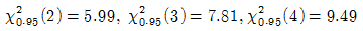
이다.)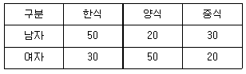
- 귀무가설(H0) 채택이다.
- X2 통계량의 자유도는 2이다.
- 검정통계량은 X20＝5.857이다.
- 남자가 한식을 선택할 기대도수는 35이다.
(정답률: 52%)
36. KS Q 0001：2013 규격에서 계량 규준형 1회 샘플링검사 중 lot의 부적합품률을 보증하는 경우 규격상한(U)을 주고 표본의 크기 n과 상한 합격판정치
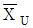
에 대한 설명으로 틀린 것은?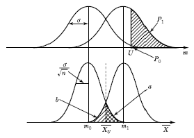
 이면 lot는 합격이다.
이면 lot는 합격이다. 로 표시된다.
로 표시된다.- 사선 친 α＝0.⑤와 β＝0.1의 사이에
 가 존재한다.
가 존재한다. - m1의 평균을 가지는 분포의 lot로부터 표본 n개를 뽑았을 경우
 에 대하여 lot가 합격할 확률은 β이다.
에 대하여 lot가 합격할 확률은 β이다.
(정답률: 50%)
37. KS Q 0001：2013 규격에서 계수 규준형 1회 샘플링 검사의 좋은 로트의 합격확률을 계산하는 식으로 맞는 것은? (단, α는 제1종 오류, β는 제2종 오류, p0는 좋은 로트의 부적합품률, p1은 나쁜 로트의 부적합품률, c는 합격판정개수이다.)
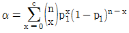
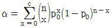
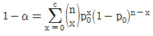
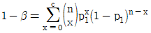
(정답률: 55%)
38. 슈하트(Shewhart) 관리도, 누적합(CUSUM) 관리도와 지수가중이동평균(EWMA) 관리도에 대한 설명 중 맞는 것은?
- 누적합 관리도는 슈하트 관리도에 비해 작성이 간편하다.
- 슈하트 관리도와 누적합 관리도는 공정의 큰 변화를 잘 탐지한다.
- 지수가중이동평균 관리도에 비해 누적합 관리도의 작성이 간편하다.
- 누적합 관리도와 지수가중이동평균 관리도는 공정의 작은 변화를 잘 탐지한다.
(정답률: 43%)
39. 다음의 두 상관도 (a), (b)에서 x, y사이의 표본상관계수에 대한 크기를 비교한 것으로 맞는 것은?(오류 신고가 접수된 문제입니다. 반드시 정답과 해설을 확인하시기 바랍니다.)
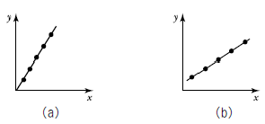
- (a)≒(b)
- (a)＞(b)
- 비교할 수 없다.
- (a)＜(b)
(정답률: 56%)
40. 어떤 제품의 로트의 중량에 대한 규격하한(L)은 0.985이다. 공정의 평균이 0.990, 표준편차가 0.0025인 정규분포를 따를 때 공정의 부적합품률은 약 얼마인가?
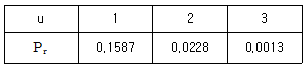
- 0.13％
- 0.24％
- 2.28％
- 15.87％
(정답률: 64%)
3과목: 생산시스템
41. 손익분기점 분석을 이용한 제품조합의 방법 중 다른 품종의 제품 중에서 대표적인 품종을 기준품종으로 선택하고 그 품종의 한계이익률로 손익분기점을 계산하는 방법은?
- 기준법
- 절충법
- 평균법
- 개별법
(정답률: 71%)
42. 작업방법의 개선을 위해서 제품이 어떤 과정 혹은 순서에 따라 생산되는지를 분석, 조사하는데 활용되는 도표가 아닌 것은?
- 흐름공정도(Flow Process Chart)
- 작업공정도(Operation Process Chart)
- 조립공정도(Assembly Process Chart)
- 부문상호관계표(Activity Relationship Diagram)
(정답률: 59%)
43. 연간 수요량은 500 단위가 필요하다고 할 때 1회 발주비용은 100원, 재고유지비율은 10％로 추정되며 단위당 단가는 100원이다. 연간발주회수는?
- 2회
- 3회
- 4회
- 5회
(정답률: 58%)
44. 제품수명주기(Product Life Cycle)의 관리가 제품조합(Product mix)의 결정에 중요한 이유로 서 가장 관계가 먼 것은?
- 제품수명 연장을 통하여 기업의 수익률 제고
- Life cycle 단계가 서로 다른 제품의 적절한 조합
- 최적 제품 mix를 통해 기업의 안정과 지속적 성장을 기대
- 쇠퇴기에 있는 품목의 수요감소에 따른 유휴 생산능력(capacity)의 활용
(정답률: 43%)
45. 웨스팅하우스에서 개발한 작업속도 평준화법을 이용한 평준화계수가 표와 같이 주어졌을 때 정미시간(normal time)을 구하면 약 몇 분인가? (단, 관측평균시간은 0.54분이다.)
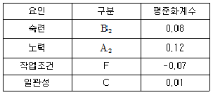
- 0.397
- 0.409
- 0.577
- 0.616
(정답률: 45%)
46. 일반적인 일정계획 방법이 아닌 것은?
- EDD법
- PERT/CPM
- 간트차트
- 시계열분석법
(정답률: 49%)
47. 설비보전에 관한 공식 중 틀린 것은?
- MTBF＝총 가동시간/총 고장건수
- 시간가동률＝(가동시간/부하시간)×100
- 속도가동률＝(이론사이클타임/실제사이클타임)×100
- 설비종합효율＝시간가동률×속도가동률×양품률
(정답률: 49%)
48. 생산관리의 목적으로 틀린 것은?
- 품질, 원가, 납기, 유연성은 생산시스템의 주요관리대상에 속한다.
- 생산자는 품질과 기능을 희생하더라도 원가를 절감하여 이익을 최대화해야 한다.
- 생산목적인 고객만족을 경제적으로 달성할 수 있도록 생산활동이나 생산과정을 효율적으로 관리하는 것이다.
- 납기관리를 위해서는 약속한 납기를 정확하게 지키는 것과 공장에서 제조하는 데 걸리는 시간을 단축하는 두 가지 목적을 동시에 달성해야 한다.
(정답률: 70%)
49. 다음의 내용은 자주보전 활동 7스텝 중 몇 스텝에 해당하는가?
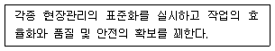
- 4스텝：총점검
- 5스텝：자주점검
- 6스텝：정리정돈
- 7스텝：자주관리의 철저(생활화)
(정답률: 38%)
50. 동작경제의 원칙 중 작업장 배치(Arrangement of Work Place)에 관한 원칙에 해당하는 것은?
- 중력과 관성을 유용하게 이용한다.
- 모든 공구나 재료는 지정된 위치에 있도록 한다.
- 양손 동작은 동시에 시작하고 동시에 완료한다.
- 타자를 칠 때와 같이 각 손가락의 부하를 고려한다.
(정답률: 63%)
51. PERT/CPM 기법에 관한 설명으로 틀린 것은?
- CPM은 미국 Dupont사에서 개발됐다.
- PERT에서 활동의 소요시간은 베타분포를 따른다고 가정한다.
- PERT는 주로 활동의 소요시간을 정확히 추정할 수 있는 경우에 적합하다.
- PERT/CPM에서 여유시간(Slack)이 0인 활동을 주활동(Critical Activity)이라 한다.
(정답률: 44%)
52. 단일기계에서 대기 중인 4개의 작업을 처리하고자 한다. 최소납기일 규칙에 의해 작업순서를 결정할 경우 4개 작업의 평균처리시간은?
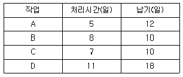
- 14일
- 18일
- 31일
- 72일
(정답률: 43%)
53. 라인 밸런싱(Line Balancing)에 관한 내용이 아닌 것은?
- 공정의 효율을 도출한다.
- 조립라인의 균형화를 뜻한다.
- 유휴시간의 최소화를 추구한다.
- 체계적 설비배치(SLP) 기법을 이용한다.
(정답률: 50%)
54. P－Q 곡선 분석에서 A영역에 해당하는 설비배치로 가장 적절한 것은?
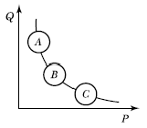
- 제품별 배치
- GT Cell 배치
- 공정별 배치
- 위치고정형 배치
(정답률: 60%)
55. 스톱워치를 이용한 시간연구 결과 평균실측시간은 10분, 레이팅 계수는 120％로 측정되었다. 외경법에 의한 여유율이 25％인 경우, 이 작업의 표준시간은 얼마인가?
- 12.5분
- 13.3분
- 15.0분
- 16.0분
(정답률: 56%)
56. 고객의 요구를 효율적으로 충족시키기 위해 공급자, 생산자, 유통업자 등 관련된 모든 단계의 정보와 자재의 흐름을 계획, 설계 및 통제하는 관리기법은?
- SCM
- ERP
- MES
- CRM
(정답률: 64%)
57. MRP의 관리적 특징이 아닌 것은?
- 적절한 납기이행
- 소인화에 의한 공정효율화
- 상황변화에 따른 생산일정의 변경 용이
- 공정품을 포함한 종속수요품의 평균재고 감소
(정답률: 55%)
58. 수요예측에서 평활계수(α)의 결정 시 맞는 것은?
- 신제품이나 유행상품의 수요예측에서는 평활계수(α)를 적게 한다.
- 실질적인 수요변동이 예견될 때는 예측의 감응도를 높이기 위하여 평활계수(α)를 적게 한다.
- 일반적으로 평활계수(α)는 0.01~0.3의 값을 취하고, 수요가 불안정하면 0.5~0.9의 값을 사용하기도 한다.
- 수요의 기본수준에 큰 변동이 없는 것으로 예견되면 평활계수(α)를 크게 하여 예측의 안정도를 높인다.
(정답률: 57%)
59. 구매방법 중 기법이 현재 자재의 가격은 낮지만 앞으로는 가격이 상승할 것으로 예상되어구매를 하는 방법으로 시장 가격변동을 이용하여 기업에 유리한 구매를 하려는 것은?
- 충동구매
- 시장구매
- 일괄구매
- 분산구매
(정답률: 71%)
60. 도요타 생산방식에서 제시한 7가지 낭비에 해당되지 않는 것은?
- 가공의 낭비
- 동작의 낭비
- 납기의 낭비
- 운반의 낭비
(정답률: 44%)
4과목: 신뢰성관리
61. 보전도를 설명한 것으로 맞는 것은?
- 보전원의 기술수준의 정도
- 시스템, 기기 등이 규정된 조건에 의도하는 기간 중 규정된 기능을 유지할 확률
- 수리하여 가면서 사용하는 시스템, 기기 등이 어떤 특정한 순간에 기능을 유지하는 확률
- 수리하여 가면서 사용하는 시스템, 기기, 부품 등이 규정된 조건에서 보전이 될 때 규정된 시간 내에 보전이 완료될 확률
(정답률: 54%)
62. FMEA 등급의 결정방법인 고장 평점법에 관한 설명 중 틀린 것은?
- 고장등급은 Ⅰ, Ⅱ, Ⅲ, Ⅳ 등급이 있다.
- C1~C5의 값은 10점 만점으로 채점한다.
- Cs는 C1×C2×C3×C4×C5)1/5으로 계산된다.
- Ⅰ등급은 2점 이하이고, Ⅳ등급은 7~10점이다.
(정답률: 51%)
63. 와이블 확률지를 사용하여 μ와 σ를 추정하는 방법에 관한 설명으로 가장 거리가 먼 것은?
- 고장시간 데이터 ti를 적은 것부터 크기순으로 나열한다.
- lnt0＝1.0과 1/1-F(t)＝1.0과의 교점을 m추정점이라 한다.
- 타점의 직선과 F(t)＝63％와 만나는 점의 아래측 t눈금을 특성수명 η의 추정치로 한다.
- m추정점에서 타점의 직선과 평행선을 그을 때 그 평행선이 lnt=0.0과 만나는 점을 우측으로연장하여 μ/η와 σ/η의 값을 읽는다.
(정답률: 62%)
64. 하나의 부품의 신뢰도가 R인 n중 k구조(k out of nredundancy)의 시스템 신뢰도는? (단, 1≤k≤n이다.)
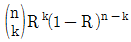
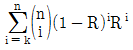
(정답률: 64%)
65. 부품 A는 평균수명이 100시간이 지수분포를 따르고, 부품 B는 평균 100시간, 표준편차 46시간인 정규분포를 따를 경우, 이들 부품의 10시간에서의 신뢰도에 대하여 맞게 표현한 것은? (단, u0.90＝1.282, u0.95＝1.645, u0.975＝1.96이다.)
- 동일하다.
- 비교 불가능하다.
- 부품 A의 신뢰도가 더 높다.
- 부품 B의 신뢰도가 더 높다.
(정답률: 39%)
66. 동일한 부품 2개의 직렬체계에서 리던던시 부품 2개를 추가할 때 가장 신뢰도가 높은 구조는?
- 체계를 병렬 중복
- 부품 수준에서 중복
- 첫째 부품을 3중 병렬 중복
- 둘째 부품을 3중 병렬 중복
(정답률: 47%)
67. 샘플 5개를 수명시험하여 간편법에 의해 와이블 모수를 추정하였더니 형상모수(m)가 2, 척도모수(t0)가 90시간, 위치모수(r)가 0 이었다. 이 샘플의 평균수명은 약 얼마인가? (단, ?(1.2)＝0.9182, ?(1.3)＝0.8873, ?(1.5)＝0.8362이다.)
- 7.93시간
- 8.42시간
- 8.68시간
- 8.71시간
(정답률: 48%)
68. 샘플 10개에 대하여 5개가 고장 날 때까지 시험한 결과 1000시간, 2000시간, 3000시간, 4000시간, 5000시간에 각각 한 개씩 고장이 났다. MTBF의 점 추정치는 몇 시간인가? (단, 고장은 지수분포를 따른다.)
- 2,000
- 4,000
- 6,000
- 8,000
(정답률: 61%)
69. 계수 1회 샘플링 검사(MIL－STD－690B)에 의하여 총시험시간을 9,000시간으로 하여 고장개수가 0개이면 로트를 합격시키고 싶다. 로트허용 고장률이 0.0001/시간인 로트가 합격될 확률은 약 몇 ％인가?
- 10.04％
- 20.04％
- 30.66％
- 40.66％
(정답률: 53%)
70. 어느 가정의 연말 크리스마스트리(Christmas Tree)가 50개의 전구로 구성되어 있다. 이 트리를 점등 후 연속사용 할 때 1000시간까지 고장난 개수가 30개라고 할 때, 신뢰도 R(t)는?
- 0.3
- 0.2
- 0.4
- 0.5
(정답률: 64%)
71. 평균 순위를 이용하여 소시료 시험 결과 2번째 순위에서의 고장률함수 λ(t2)＝0.02/hr이었다. 이때 실험한 시료수가 5개이고, 3번째 고장난 시료의 고장시간이 20시간 경과 후였다면 2번째 시료가 고장난 시간은?
- 7.5시간
- 10시간
- 12시간
- 15시간
(정답률: 45%)
72. 신뢰성에 관한 설명으로 틀린 것은?
- 고유 신뢰성에서 특히 중시되는 것은 설계기술이다.
- 사용과정에서 나타나는 고유 신뢰성은 인간의 요소에 밀접하게 관계된다.
- 과거 경험을 토대로 사용조건을 고려한 설계는 물론, 사용 신뢰성도 고려해 제품이 설계, 제조되어야 한다.
- 제품의 신뢰성을 생각할 때 제조자 측과 사용자 측의 입장을 분리해서 고유 신뢰성과 사용 신뢰성으로 나눈다.
(정답률: 56%)
73. 고장률이 각각 λ1, λ2, λ3인 부품 3개가 직렬로 연결되어 있을 때 시스템의 고장률은?
- λ1·λ2·λ3
- λ1+λ2+λ3
- 1-λ1·λ2·λ3
- 1-(1-λ1)(1-λ2)(1-λ3)
(정답률: 49%)
74. Y부품에 가해지는 부하(stress)는 평균 3,000kg/mm2, 표준편차 300kg/mm2이며, 강도는 평균 4,000kg/mm2, 표준편차 400kg/mm2인 정규분포를 따른다. 부품의 신뢰도는 약 얼마인가? (단, u0.90＝1.282, u0.95＝1.645, u0.9722=2, u0.9987＝3이다.)
- 90.00％
- 95.46％
- 97.72％
- 99.87％
(정답률: 70%)
75. 그림과 같은 FT도와 일치하는 신뢰성 블록도는?
(정답률: 70%)
76. 병렬 리던던시(Redundancy) 시스템의 목표 설계 평균수명이 약 41,666 시간이 되도록 설계하고자 한다. 고장률이 0.⑤회/1000시간인 부품으로 구성할 때 필요한 부품 수는?
- 1개
- 2개
- 3개
- 4개
(정답률: 47%)
77. 정상사용온도(30℃)에서의 수명이 10,000시간이라면 10℃ 법칙에 의거 가속수명시험온도(130℃)에서의 수명을 구하면 약 몇 시간인가?
- 10시간
- 12시간
- 14시간
- 16시간
(정답률: 54%)
78. 고장시간과 수리시간이 각각 모수 λ와 μ를 가지고 지수분포를 따른다고 할 때 고장률 λ＝0.⑤/시간, 수리율 μ＝0.6/시간일 때 가용도는 약 얼마인가?
- 0.021
- 0.077
- 0.923
- 0.977
(정답률: 64%)
79. 우발고장 기간의 고장률을 감소시키기 위한 대책으로 틀린 것은?
- 혹사하지 않도록 한다.
- 주기적인 예방보전을 한다.
- 과부하가 걸리지 않도록 한다.
- 사용상의 과오를 범하지 않게 한다.
(정답률: 63%)
80. 고장률이 CFR인 경우의 고장확률밀도함수는 어느 것인가?
- 지수분포
- 정규분포
- 대수정규분포
- 형상모수(m)가 1보다 클 경우의 와이블분포
(정답률: 63%)
5과목: 품질경영
81. 경쟁기준의 강화로서 높은 수준의 성과를 달성한 기업과 자사를 비교 평가하는 기법은?
- TQM
- 벤치마킹
- PDPC법
- 계통도법
(정답률: 68%)
82. 사내표준화의 요건으로 사내표준의 작성대상은 기여 비율이 큰 것으로부터 채택하여야 하는 데, 공정이 현존하고 있는 경우 기여비율이 큰 것에 해당되지 않는 것은?
- 통계적 수법 등을 활용하여 관리하고자 하는 대상인 경우
- 준비교체 작업, 로트 교체 작업 등 작업의 변경점에 관한 경우
- 현재에 실행하기 어려우나 선진국에서 활용하고 있는 기술인 경우
- 새로운 정밀기기가 현장에 설치되어 새로운 공법으로 작업을 실시하게 된 경우
(정답률: 68%)
83. 사내 표준화의 요건으로 볼 수 없는 것은?
- 실행 가능한 내용일 것
- 기록이 구체적이고 객관적일 것
- 직관적으로 보기 쉬운 표현을 할 것
- 단기적인 방침 하에 체계적으로 추진할 것
(정답률: 70%)
84. 기업에서 품질혁신을 위해 기업문화를 변혁하고자 할 때는 조직이 추구해야 할 품질 가치기준을 인식해야 한다. 최고경영자 관점에서의 품질 가치기준으로 틀린 것은?
- 품질이 조직의 중심적인 가치기준이어야 한다.
- 품질이 경영전략의 중요 변수임을 알아야 한다.
- 품질에 대한 현장에서의 지속적인 문제해결에 참여하여야 한다.
- 품질담당 조직뿐만 아니라 각 부서의 관리자에게 품질에 대한 궁극적인 책임과 권한을 부여하여야 한다.
(정답률: 53%)
85. 어떤 조립품의 구멍과 축의 치수가 표와 같이 주어질 때, 평균틈새는 얼마인가?
- 0.00⑤5
- 0.00045
- 0.00035
- 0.00025
(정답률: 47%)
86. 품질보증(QA)에 대한 설명으로 틀린 것은?
- 품질요구 사항을 충족하는 데 중점을 둔 품질경영의 일부이다.
- 품질요구사항이 충족될 것이라는 신뢰를 제공하는 데 중점을 둔 품질경영의 일부이다.
- 소비자의 요구품질이 충분히 만족된다는 것을 보증하기 위해서 생산자가 행하는 체계적인 활동이다.
- 우리말의 보증에 대한 영어 단어는 assure, warrant, guarantee 등이 사용된다. 각 단어의 의미는 조금씩 차이는 있지만, 품질경영에서는 단어의 차이를 중시하지 않고, 목적은 모두 같은 것으로 본다.
(정답률: 39%)
87. 파라슈라만 등(Parasuraman, Berry & Zeithamal)에 의해 제시된 서비스 품질 측정도구인 “SERVQUAL 모형”의 5가지 품질특성에 해당되지 않는 것은?
- 확신성(assurance)
- 신뢰성(reliability)
- 유용성(usefulness)
- 반응성(responsiveness)
(정답률: 45%)
88. 부적합의 발생은 인간의 실수에서 오고 ‘또한 인간은 왜 실수를 저지를까?’, ‘그 까닭은 무엇일까?’ 등을 연구해서 3가지를 알아냈고 이를 대응하기 위해 Zero Defect 운동이 시작되었다. 이 3가지 오류에 해당하지 않는 것은?
- 부주의
- 작업표준에 의한 오류
- 지식과 교육훈련의 부족
- 충분하지 못한 작업준비
(정답률: 54%)
89. 측정시스템에서 편의(정확성)에 관한 설명으로 맞는 것은?
- 편의는 Gage R&R로 측정한다.
- 편의가 기대 이상으로 크면 측정시스템은 바람직하다는 뜻이다.
- 측정기의 측정범위 전 영역에서 편의값이 일정하면 정확성이 좋다는 뜻이다.
- 편의는 측정값의 평균과 이 부품의 기준값(reference value)의 차이를 말한다.
(정답률: 41%)
90. 어떤 공정에서 가공되는 품질특성은 두께로서 규정 공차가 5.0±0.⑤mm로 주어져 있다. 생산제품의 평균두께가 4.98mm, 표준편차가 0.02mm이었다. 이때 최소공정능력지수(minimum process capability index：Cpk)는 얼마인가?
- 0.33
- 0.50
- 0.83
- 1.17
(정답률: 29%)
91. 측정시스템의 재현성이 클 경우 그 원인에 대한 설명으로 맞는 것은?
- 기준 값이 틀림
- 불규칙한 사용 시기
- 측정자의 측정 미숙
- 개인별 측정자의 버릇
(정답률: 49%)
92. 품질은 주관적 특성과 객관적 특성으로 형성되어 있는데, 품질의 주관적 특성으로 틀린 것은?
- 신뢰성
- 안전성
- 소유의 우월감
- 사용에 대한 적합성
(정답률: 37%)
93. 공정능력(Process capability)에 대한 설명으로 맞는 것은? (단, U는 규격상한, L은 규격하한, σω는 군내변동이다.)
- 공정능력비가 클수록 공정능력이 좋아진다.
- 현실적인 면에서 실현 가능한 능력을 정적공정능력이라 한다.
- 하한규격만 주어진 경우 하한공정능력지수(CpkL)는 (
 )을 3σω로 나눈 값이다.
)을 3σω로 나눈 값이다. - 상한규격만 주어진 경우 상한공정능력지수(CpkU)는 (U-L)을 6σω로 나눈 값이다.
(정답률: 56%)
94. 산점도를 보는 방법이 아닌 것은?
- ‘위 상관’이 아닌가를 본다.
- 이상한 점이 없는가를 본다.
- 층별할 필요는 없는가를 본다.
- 관리한계를 벗어난 점이 없는가를 본다.
(정답률: 45%)
95. 평가비용에 대한 설명 중 틀린 것은?
- 평가비용은 부적합을 미연에 방지하기 위한 비용이다.
- 수입검사 비용은 구입재료, 부품 및 외주가공품 등의 수입검사에 소요된 비용이다.
- 제조라인의 조립공정검사 및 부품가공검사에 소요된 공정 검사인원의 인건비·경비에 소요된 비용이다.
- 측정시험 및 검사장비에 관한 비용에는 기준기 또는 계량기의 검정시험 등에 들어간 비용이 포함된다.
(정답률: 48%)
96. 식스시그마의 추진에서 프로젝트의 진척도 관리는 매우 중요하다. GE의 각 사업부가 식스시그마 프로젝트 진척도를 평가하는 척도로서 틀린 것은?
- 표준화
- 고객만족
- 공급자 품질
- COPQ(Cost of poor quality)
(정답률: 35%)
97. 표준의 서식과 작성방법(KS A 0001：2015)에 관한 사항 중 틀린 것은?
- 본문은 조항의 구성 부분의 주체가 되는 문장이다.
- 본체는 표준 요소를 서술한 부분이다. 다만 부속서를 제외한다.
- 추록은 본문, 각주, 비고, 그림, 표 등에 나타내는 사항의 이해를 돕기 위한 예시이다.
- 조항은 본체 및 부속서의 구성 부분인 개개의 독립된 규정으로서 문장, 그림, 표, 식 등으로 구성되며, 각각 하나의 정리된 요구사항 등을 나타내는 것이다.
(정답률: 41%)
98. 제품책임의 예방대책에 해당되지 않는 것은?
- 고도의 QA 체제를 확립한다.
- 신뢰성 및 안전성에 대한 확인시험을 한다.
- 공급물품에 대한 기술지도 및 관리점검을 강화한다.
- 제품의 기능, 품질, 사용 측면에서 사용자에게 충분히 애프터 서비스한다.
(정답률: 57%)
99. KS 인증심사기준 중 제품분야에서 일반심사기준 6가지에 해당되지 않는 것은?
- 품질경영 관리
- 협력업체 관리
- 시험·검사설비의 관리
- 소비자보호 및 환경·자원관리
(정답률: 43%)
100. 품질경영시스템－요구사항(KS Q ISO 9001：2015)을 도입하는 조직은 품질방침을 세우고 실행 및 유지하여야 한다. 이러한 품질방침의 수립에 관한 요구사항에 해당되지 않는 것은?
- 품질목표의 설정을 위한 틀을 제공
- 적용되는 요구사항의 충족에 대한 의지표명을 포함
- 조직의 목적과 상황에 적절하고 조직의 전략적 방향을 지원
- 제품 및 서비스의 적합성과 고객만족의 증진과 관련되어야 함
(정답률: 26%)